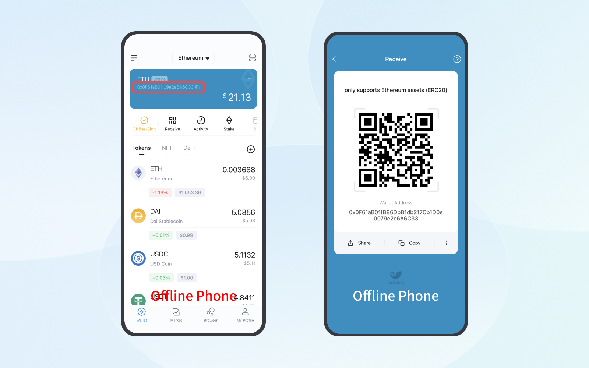
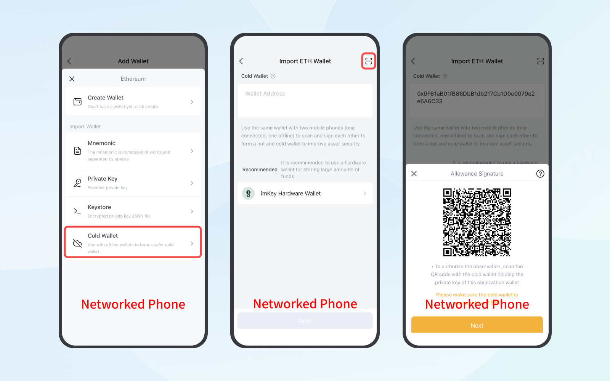
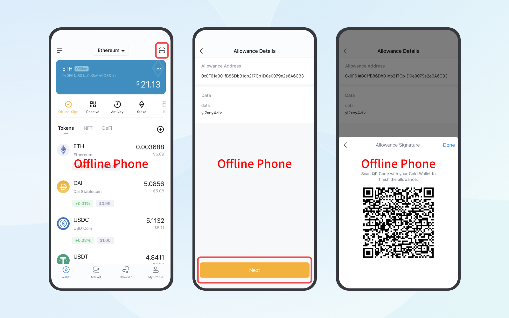
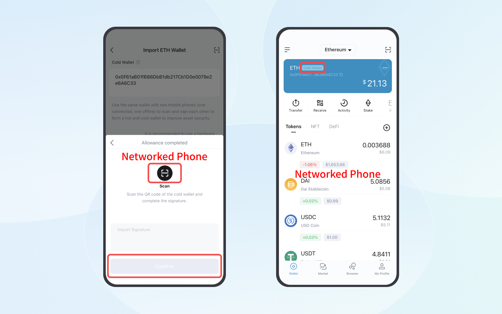
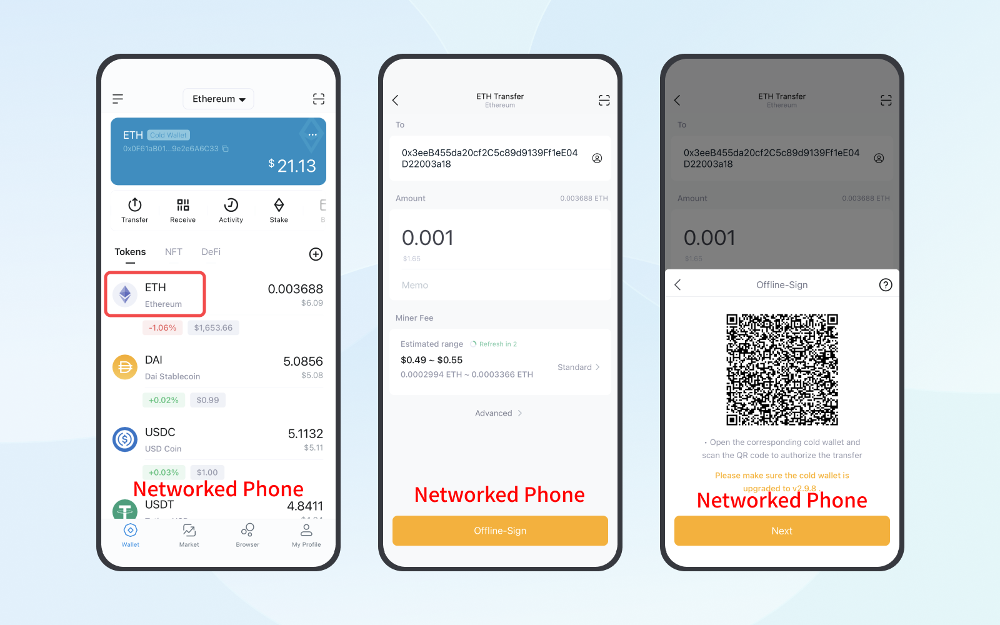
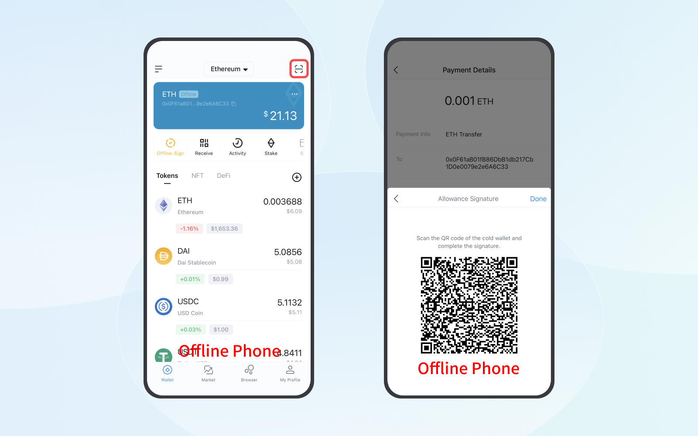
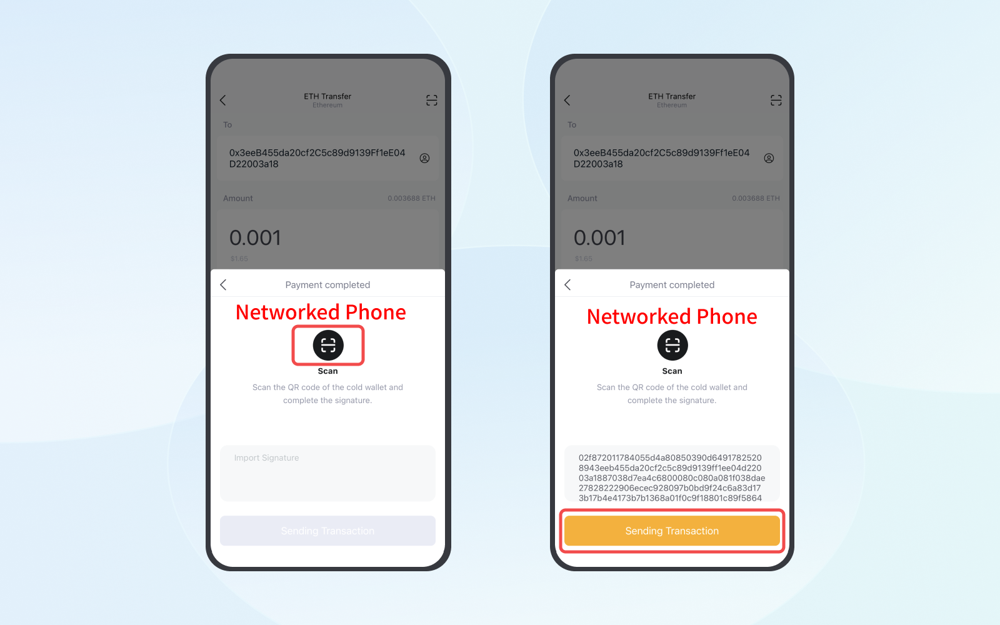

What Are Cold Wallet and Watch Wallet?
Before setting up a cold wallet, let’s understand what is a cold wallet and a watch wallet.
Cold Wallet: it is a wallet created offline and eliminates cyber threats, making the assets in the wallet more secure. But how to transfer the assets in such a wallet? That’s where a watch wallet comes into play.
Watch Wallet: it is for checking the assets in a cold wallet. With a watch wallet, you can transfer the assets in the cold wallet. To do that, you need to first apply for a transfer through the watch wallet. After that, assets will be transferred with your confirmation and signature from the cold wallet.
We can set up a cold wallet in imToken after understanding the concepts behind these two kinds of wallet.
Note: currently, you can only set up ETH cold wallets and watch wallets in imToken. Other types of wallet are not supported yet.
Preparations:
- You should have two unrooted phones with one offline being a cold wallet and the other networked serving as a watch wallet. Otherwise, imKey, a hardware wallet, is a recommended option for you.
- You need to install the latest version of imToken on the two phones. Click here to check out how to download imToken securely.
Step 1: creating a cold wallet
On the Offline Phone:
1. Switch on the flight mode or turn off the network to make your phone offline. Then, open the downloaded imToken to create an identity.
2. After creating an identity, click the ETH wallet address to get the address QR code.

Step 2: setting up the watch wallet
On the Networked Phone:
1. Open the downloaded imToken to create an identity.
2. Click “My Profile” - “Manage your wallet” - “Add Wallet” - “ETH” - “Cold Wallet”.
3. Click the scan button at the top right corner to scan the QR code on the offline phone for accessing the cold wallet address. Then, click “Next” to enter the “Allowance Signature” page.

Step 3: generating an allowance signature QR code in the cold wallet
On the Offline Phone:
1.Go back to the wallet page and click the scan button at the top right corner to scan the QR code on the networked phone.
2.Click “Next” to enter the password for generating an allowance signature QR code.

Step 4: scanning the allowance signature QR code
On the Networked Phone:
Click “Next” and click the scan button to scan the QR code on the offline phone. After that, click “confirm” to complete the watch wallet setting. Now you can view the balance of the cold wallet via your watch wallet.

Step 5: initiating a transfer through the cold wallet
On the Networked Phone:
1.Click the icon of the token that you want to transfer. For example, if you want to transfer ETH, click “ETH” - “transfer” and fill in the transfer information. Then, please click “Offline-Sign”.
2.After checking all the information, click “Next” to generate an Offline-Sign QR code.

On the Offline Phone:
1.Click the scan button in the ETH wallet to scan the Offline-Sign QR code.
2. After checking all the information, click “Next” to enter the password. After that, click “Allowance Signature” to generate a QR code.

On the Networked Phone:
1.Click “Next” and click the scan button in the middle of the screen to scan the QR code on the offline phone.
2.Click “Send Transaction” and the transaction will be broadcasted. After a successful transfer, you can see the updated balance of your cold wallet via the watch wallet.

Note:
- The cold wallet is hosted by your offline phone and contains the private key.
- The watch wallet is hosted by your networked phone and does not contain the private key.
- You can use the watch wallet to transfer assets after being authorized by the cold wallet.
Note: Please keep your backup mnemonic phrase safe. The correct way to back it up is using physical media, such as writing it down by hand on a piece of paper or using a imKey HeirBOX Mnemonic Storage. Because these physical media cannot be connected to the internet or transfer information between electronic devices, they can truly save your mnemonic phrase offline.